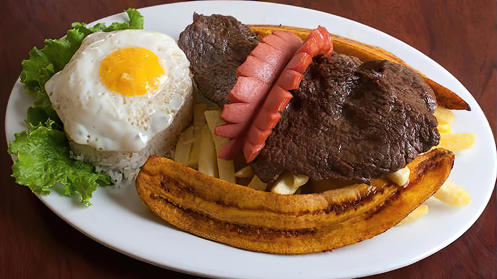

<!DOCTYPE html>
<html lang="en">
<head>
    <meta charset="UTF-8">
    <meta http-equiv="X-UA-Compatible" content="IE=edge">
    <meta name="viewport" content="width=device-width, initial-scale=1.0">
    <title>EJERCICIO 4</title>
    <style>
        body{
            text-align: center;
        }
    </style>
</head>
<body>
    <script>
        var platillo_favorito;

        platillo_favorito=prompt("¿Cuál es su platillo favorito?");

        document.write("")
        switch (platillo_favorito.toUpperCase()) {
            case "CEVICHE": document.write("<h2>Deberías acompañarlo con una Inca Kola</h2>") ;break;
            case "TALLARINES": document.write("<h2>Los tallarines al pesto con bistec, son mis favoritos</h2>") ;break;
            case "CAUSA": document.write("<h2>La causa de atún es un excelente aperitivo</h2>") ;break;
            case "ANTICUCHO": document.write("<h2>Los anticuchos deben ser cocidos al carbón y en parrilla</h2>") ;break;
            default: document.write("<h1>Bisteck a lo pobre</h1>"+"");break;
        }
    </script>
</body>
</html>